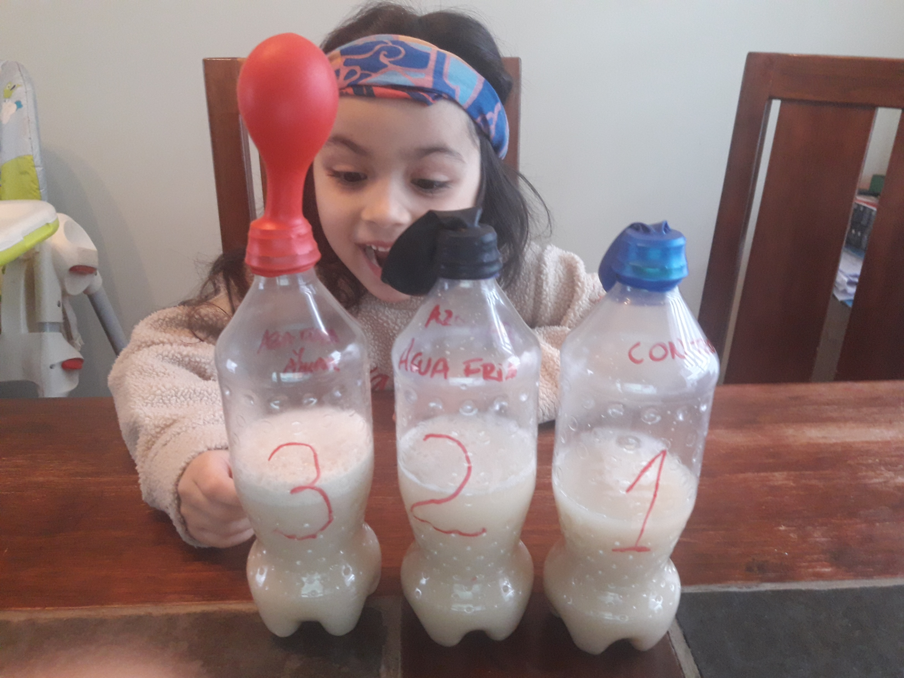
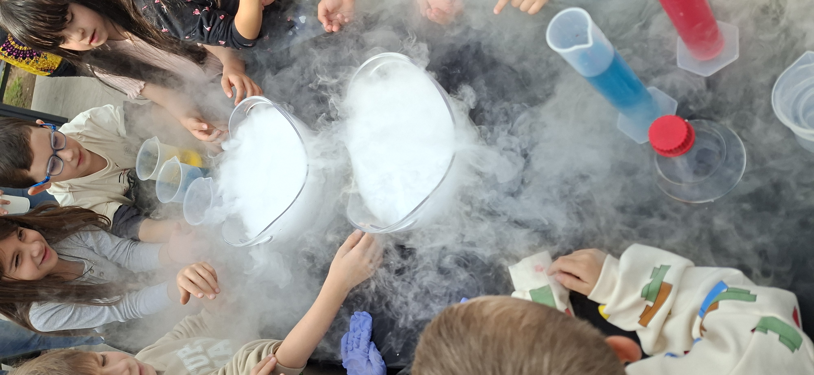
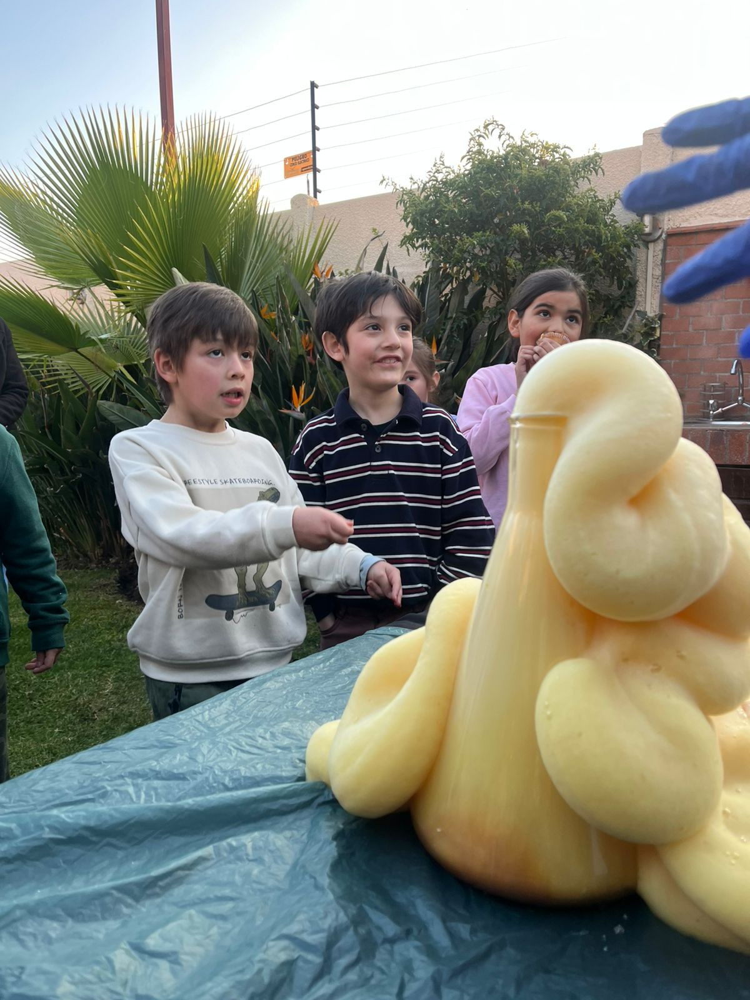
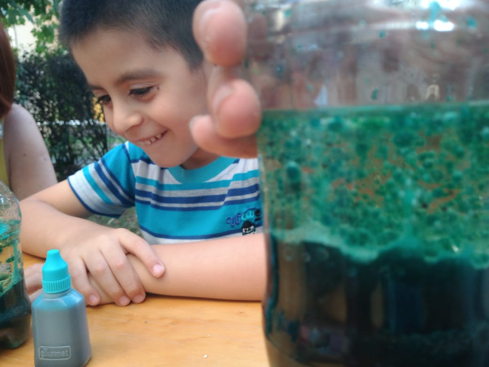
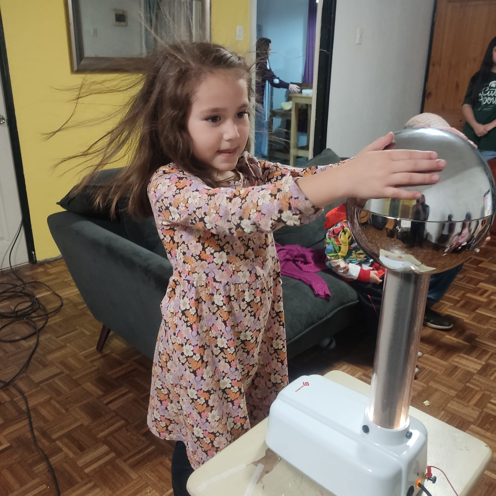

🔬 Talleres Científicos
Actividades prácticas e interactivas que acercan la ciencia de forma entretenida y significativa.


Inspiramos la curiosidad científica mediante experiencias dinámicas, talleres interactivos y actividades que acercan la ciencia a niños, niñas, familias y comunidades.
Soy Carolina Lagos Morales, Magíster en Didáctica de las Ciencias Experimentales y apasionada divulgadora científica. Mi misión es transformar la percepción de la ciencia, haciéndola accesible y atractiva para todas las personas, especialmente entre niños y niñas, promoviendo el aprendizaje significativo y el amor por la ciencia.
.jpg)
Transformar la manera en que las personas se relacionan con la ciencia. A través de talleres dinámicos y experiencias educativas estimulantes, buscamos despertar la curiosidad, derribar mitos y fomentar el pensamiento crítico. Creemos que la ciencia es para todos y nos esforzamos por hacerla accesible y relevante en la vida cotidiana, colaborando con escuelas, organizaciones y comunidades para construir un futuro donde la ciencia sea una herramienta de desarrollo e innovación.
Inspirar la pasión por la ciencia en cada rincón del país, creando una comunidad de mentes curiosas y comprometidas con el conocimiento científico.
Actividades prácticas e interactivas que acercan la ciencia de forma entretenida y significativa.
Celebra de manera diferente con experimentos, desafíos y experiencias científicas que sorprenden a niños y niñas.


Diseño y ejecución de ferias, charlas y actividades de divulgación científica para colegios, instituciones y comunidades.









Conoce algunas experiencias compartidas por nuestra comunidad:
Ver Testimonio 1 Ver Testimonio 2Ubicación: Santiago, Chile
Email: conectandociencia@gmail.com
Instagram: @conexciencia
Facebook: @conexciencia
whatsapp: @conexciencia